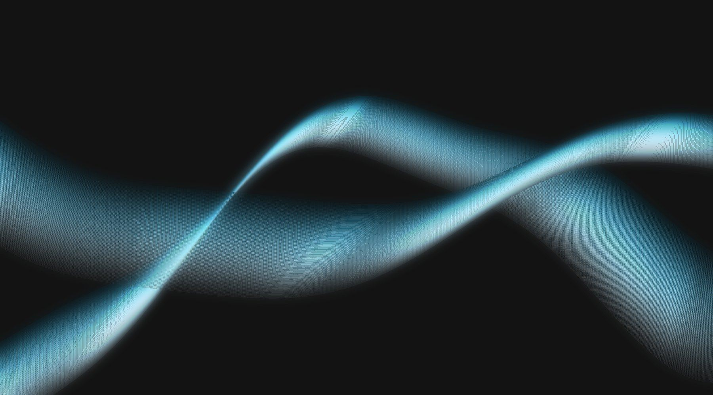
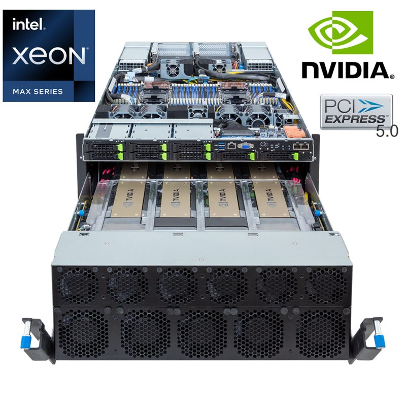
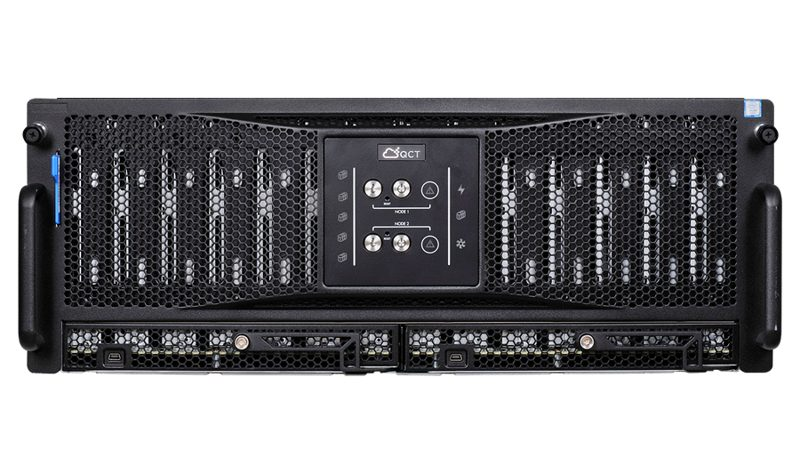
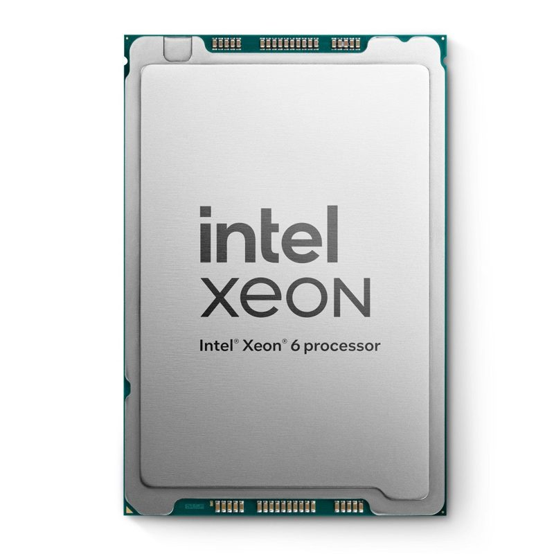
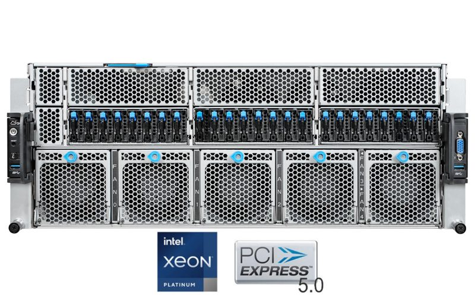
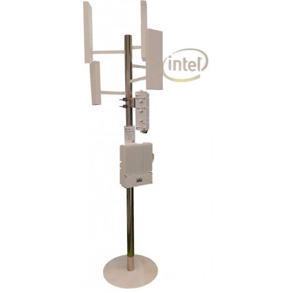

Strategic shareholder
'Home-grown' open-OEM, solving IT's complexity.
Hyperscalers is Australia's sovereign open-OEM manufacturer of servers, storage and networking — hyperscale-grade hardware designed, built, stocked and supported in Australia since 2014. As QORINAI's strategic shareholder, Hyperscalers anchors the hardware link of the AIDC chain.
Who they are
The manufacturer behind Australia's clouds.
Founded in Canberra in 2014, Hyperscalers took the open-compute model the world's largest cloud operators use for their own data centres and made it available to Australian service providers, telcos and enterprises — without the lock-in of Tier 1 OEM pricing.
Open-OEM, explained
Hyperscale operators do not buy branded servers; they specify hardware directly from the original design manufacturers and run it with open firmware and open networking. Hyperscalers brings that "open-OEM" supply chain to Australia: the same chassis, boards and switches, configured and tested locally, with generic CPUs, memory, SSDs and NICs that work across platforms instead of vendor-locked parts.
Australian manufacturing and stock
Systems are assembled, configured and burned in at Hyperscalers' Australian facility and held as local stock — GPU servers, PCIe Gen5 Intel and AMD platforms, storage servers, JBODs and bare-metal switches. Metro delivery in one to four days and a full Australian warranty mean a failed part in a QORINAI hall is replaced from Canberra, not from an offshore RMA queue.
HyperLabs
Hyperscalers' laboratory lets customers test-drive appliances, reference architectures and complete racks before buying (Lab-as-a-Service), productise their own software as a hardware appliance (the IP-appliance design process), and configure architectures against real workloads.
Education and the channel
Whitepapers, videos and OEM-comparison material explain manufacturing processes, open versus locked hardware and public-versus-private cloud economics. Supply is 100 % partner-focused: cloud service providers, colocation operators, enterprise IT, telcos and consultants buy through the channel programme.
Product range
What Hyperscalers builds.

GPU & AI servers
- NVIDIA HGX B300 / B200 8-GPU (8U)
- NVIDIA H200 / RTX PRO 6000 Blackwell PCIe (4U)
- AMD Instinct MI325X 8-GPU (7U)
- NVIDIA Grace Hopper MGX (2U)
- 72-GPU-per-rack B300 density nodes

x86 servers
- PCIe Gen5 Intel Xeon 6 / AMD EPYC 9005
- PCIe Gen4 Intel / AMD
- Hyper-converged and multi-node 4N
- 1U · 2U · 3U–10U · micro servers
- Tier 1 original and hyperscale x86 lines

Storage
- Storage servers
- 4U JBODs
- NVMe all-flash
- SDS / SDC platforms

Networking
- Ethernet switches T1000 / T3000 / T5000
- Bare-metal ONIE — Cumulus / OCP
- 1G to 400G, SFP / QSFP

OCP hyperscale
- Rackgo M compute and JBODs
- Rackgo X compute, JBODs, rack architecture
- Rackgo X-RSD compute and storage

Workstations, edge & devices
- PCIe Gen5 workstations
- Edge and far-edge devices
- Notebooks, touchpads, Chromebooks

Commodities
- CPU · RAM · SSD · HDD · NVMe
- NICs and GPUs
- Open parts for Tier 1 chassis

Pre-configured systems
- Lab-tested reference builds
- Tier 1 original and hyperscale variants
- Complete OEM / ODM / OCP racks

Services & support
- Lab-as-a-Service
- IP-appliance design
- Australian warranty and support
Why it matters to QORINAI
What a manufacturer on the share register changes.
Supply certainty
Allocation of NVIDIA HGX B300 and AMD Instinct systems from local stock, with configuration and burn-in done before the pallet reaches the hall.
Sovereign warranty
Australian warranty, Australian spares, Australian engineers. A failed GPU tray is swapped from hot spares and RMA'd domestically.
Open economics
Open-OEM pricing and generic commodities keep the capital cost per GPU — and therefore the hosting price per GPU-hour — below Tier 1 OEM builds.
Hardware from Canberra, halls from QORINAI.
Ask for a configuration, a lab test drive or a hosting quote in one enquiry.